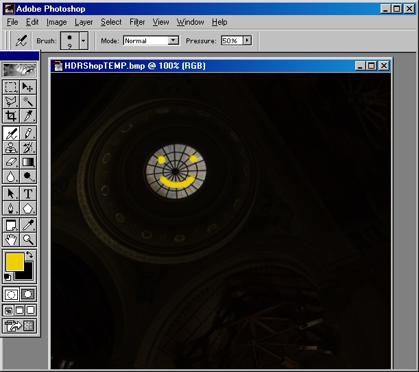

HDR画像の編集
HDR
Shopには、画像編集ツールがありませんが、従来のLDR画像エディタを用いてHDR画像の編集をすることが可能です。
まずはじめに、使いたい画像エディタを選択します。現行のバージョンのHDR Shopでは、エディタを自動的に起動するためには、 拡張子”.BMP”ファイルの関連付けを変更しなければなりません。この作業は、エクスプローラウィンドウを開き、
“Tools”メニューから “Folder Options”を選択します。
以下に示したようなダイアログが開きます。
“File Types”タブをクリックし、拡張子 “BMP”を探し、選択します。
関連付けを変更するために、 “Change”ボタンをクリックします。ここで、自分が用いたいエディタを選択します。このチュートリアルでは、Adobe
Photoshopを利用します。
OK”をクリックして、自分が選択したプログラムがBMPファイルに関連付けされているのを確認してください。
それでは、編集作業について説明します。
はじめに、編集したいHDR画像をロードさせます。この例では、memorial.hdrを用いています。
次に、‘+’と ‘-’ キーを使って、編集したい画像が見えるまで露光を調整します（つまり、暗すぎず、明るすぎないということ）。下記の図は、画像を6段階暗くしたものですが、そうすることで天窓が見えるようになり、編集が可能になります。
次に、 “File”メニューから、 “Edit in Image Editor”を選択します。
現行のディレクトリーに一時的なBMP画像ファイルが書き込まれ、（Windowsエクスプローラで規定された）デフォルトのBMPエディタが開かれます。HDR Shopは、下記の図で示されているように、
“Hit OK when edit complete（編集が完了したらOKを押してください）”メッセージを表示します。編集が終了し、同じBMPファイルに作業が保存されるまで、OKボタンは押さないでください。
画像エディタに作業を切り替えます（この場合では、Adobe Photoshopです）。

画像を編集します。

編集されたLDR画像を、同じBMP形式で保存します（非圧縮、24bit-windows）。
この段階で、編集は終わりました。HDR Shopに戻り、ダイアログボックスの “OK”を押します。HDR Shopは、編集されたファイルをロードし、HDR画像に変更を適用します。
HDR
Shopは、LDRエディタによって変更されたピクセルのみを変更します。つまり、HDR値（ high-dynamic range values）は修正されません（もちろん、編集時にピクセルを塗りこまない限り）。例が示すように、露光を元のレベルに戻しても、細部は保存されています。
最後に、こうした方法でHDR画像にペイントするときのヒントを挙げておきます。RGBカラーで0を用いるのは避けたほうが良いでしょう。個人的には、どの色成分においても(0-255スケール上で)15以下は使いません。暗くする必要がある場合はHDR
Shopに戻り、再露光して画像を明るくした後、それをペイントします。この作業はバンディング（訳注：濃度のムラ）をなくすだけではなく、過度の飽和色(saturated
color)を避けることによって画像に「リアリズム」をもたらす手助けとなります。